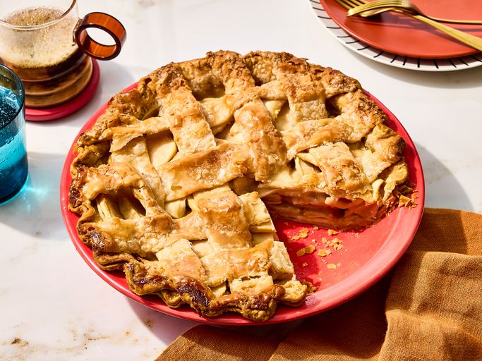

Grandma's Apple Pie
This amazing apple pie recipe belonged to my grandmother. I have never seen another one quite like it! It will always be my favorite and has won several first place prizes in local competitions. It makes the perfect dessert for family dinners or during the holidays.
Ingredients
- 5 Apples
- 1 cup of Flour
- 1/2 cup of Brown Sugar
- 2 Tablespoons of Butter
- Pie Crust
Steps to Make Apple Pie
- Make the filling: On the stove, make a paste with flour and butter. Add the sugar and water and bring to a boil. Simmer, then remove from heat.
- Assemble the pie: Press one crust into a pie plate. Place the sliced apples on the bottom crust. Use the top crust to make a lattice crust according to the recipe below. Pour the butter-sugar mixture over the lattice crust.
- Bake the pie: Bake the pie in a preheated oven until the apples are soft and the crust is golden brown.
- You'll bake the pie at 425 degrees F for 15 minutes, then you'll reduce the temperature to 350 degrees F and continue baking for 35-45 minutes. All in all, the pie will bake for about one hour, give or take a few minutes. You'll know the pie is done when the apples are soft and the crust is a beautiful golden brown color.